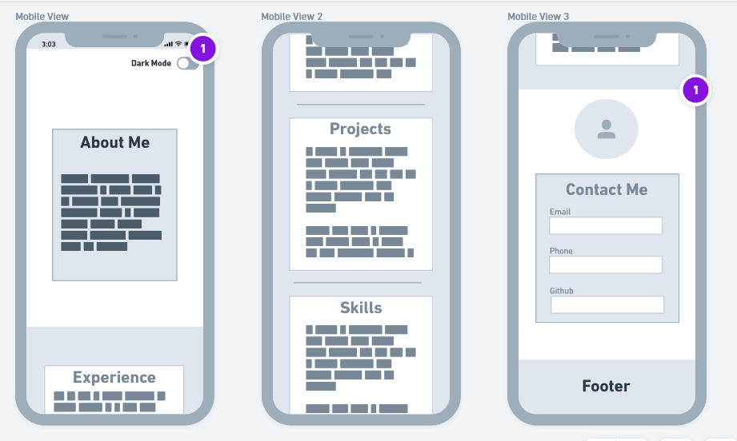
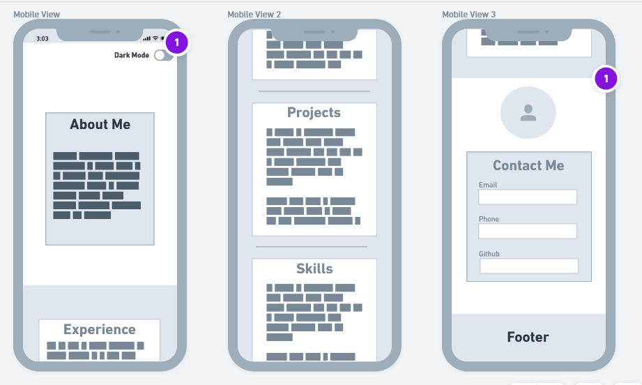

A brief description of my websites structure and the contents detailed
I would like the navigation bar to bear a custom brand, designed specifically to represent me, and be orientated to the left side of the navigation bar.The navigation bar wont actually have its own color or border, rather they links will be colored white with black outline and the background will be fully transparent and share the same background as the the "Introduction" section. The Navigation bar will have quick links to every section of the website. It will change to a hamburger menu on mobile layouts.
This entire section will have a background image of local scenery, like the Sandia Mountains or Rout 66. I would also like to implement a dark mode function at the top right of the screen for individuals who prefer a darker layout. This will be the first element of my page that any potential employer/partner will see when they click on my page.
Below the Introduction, there will be a rounded image in the center of the page with a profile picture of myself. Right below this image, I want to have a card box, containing information about myself such as name, age, occupation in a paragraph like fashion, no bullet point. This entire section will have a background image of local scenery, like the Sandia Mountains or Rout 66. I would also like to implement a dark mode function at the top right of the screen for individuals who prefer a darker layout.
 
